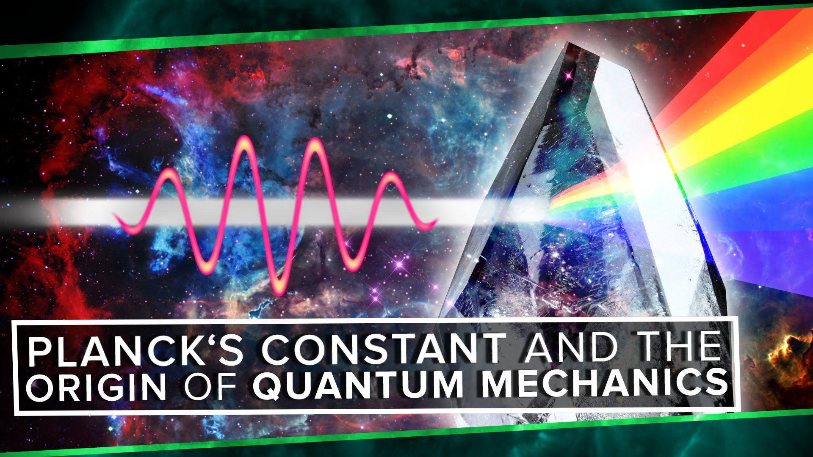
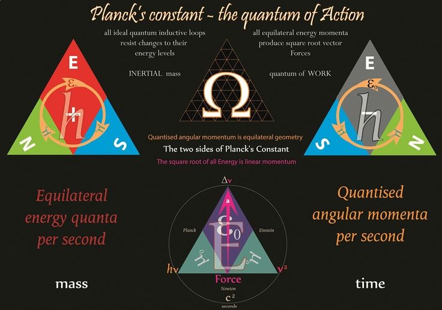

Planck- The Quantum of Constant Intelligence.
"Planck’s constant, (symbol h), fundamental physical
constant characteristic of the mathematical
formulations of
quantum mechanics, which describes the behaviour of particles and
waves on the
atomic scale, including the particle aspect of light.
The German physicist Max Planck introduced
the constant in 1900 in his
accurate formulation of the distribution of the radiation emitted by a
blackbody,
or perfect absorber of radiant energy (see Planck’s radiation law). The significance
of
Planck’s constant in this context is that radiation, such as light, is emitted,
transmitted, and absorbed
in discrete energy packets, or quanta, determined by the
frequency of the radiation and the value
of Planck’s constant."
"The energy E of each
quantum, or each photon, equals Planck’s constant h times the radiation
frequency
symbolized by the Greek letter nu, ν, or simply E = hν. A modified form of Planck’s
constant called h-bar (ℏ), or the reduced Planck’s constant, in which ℏ equals h divided
by 2π, is
the quantization of angular momentum. For example, the angular momentum of an
electron bound
to an atomic nucleus is quantized and can only be a multiple of h-bar."
"The dimension of Planck’s constant is the product of energy multiplied by time, a quantity
called action.
Planck’s constant is often defined, therefore, as the elementary quantum of
action. Its value in metre-
kilogram-second units is 6.62607004 × 10−34 joule∙second, with a
standard uncertainty of 0.000000081
× 10−34 joule∙second."
"Do you truly understand the implications of this? Any child can know anything they want,
from any time, on
any subject. Any person can ascertain the true meaning of situations as
they arise, seeing the depth and breadth
of possibilities and potential in every moment.
This is actually the truth of our human capacity for intelligence
…it stretches way beyond
the limits that we’ve lived under for so long now. It’s time to break the myth of IQ,
to extend
the mind into the ‘great unknown’ and make it the ‘very well known’ for us all.
All the new abilities
(wisdom, knowing, innate sensing, telepathy and more) available to us are
simply the inherent knowledge that’s
in the air (the energy) around us."
"In the past, we were locked
away in an individualistic and mind oriented culture, so how could we know there
was so much available
to us? Today, in our open energy system, it’s now all there for the asking
I believe these
abilities are a part of our natural birthright. All human beings can read the
sensory input around them. Many people
already have access to these abilities. In fact, some have
had them all their lives. I was one of those people who never
had an inkling of these abilities
until some years ago when I began to open up. I say this to prove that it is possible
for anyone
and everyone to access these abilities, easily and graciously. Let’s take a look at each of these
abilities and
their corresponding level of intelligence to discover how they can be used to enhance
life, work and creation."


"In this class, you will learn about the most effective machine
learning techniques, and gain practice
implementing them and getting them to work for
yourself. More importantly, you'll learn about not
only the theoretical underpinnings
of learning, but also gain the practical know-how needed to quickly
and powerfully apply
these techniques to new problems. Finally, you'll learn about some of Silicon Valley's
best
practices in innovation as it pertains to machine learning and AI."